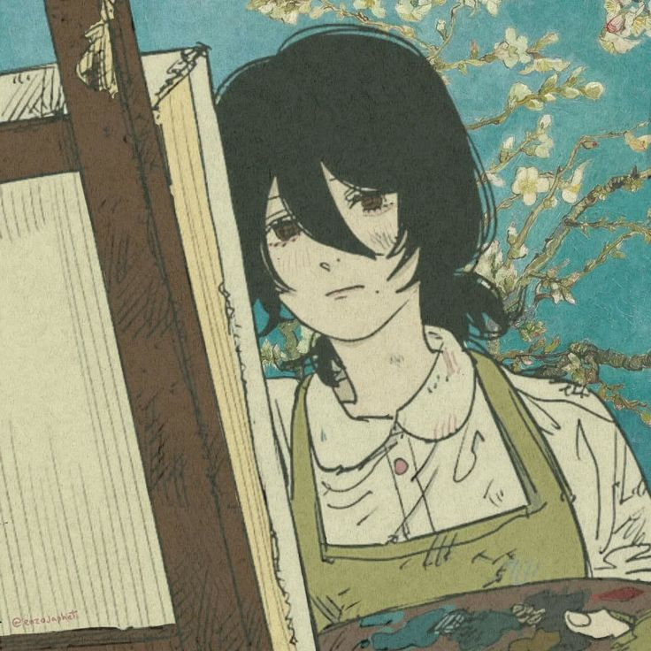

Saya adalah seorang pelajar di SMK Negeri 1 Kandeman. Jurusan saya adalah Pengembngan Perangkat Lunak dan Gim. Saya memiliki hobi menggambar dan belajar sesuatu hal baru yang belum pernah saya coba.
Foto Saya

Saya adalah seorang pelajar di SMK Negeri 1 Kandeman. Jurusan saya adalah Pengembngan Perangkat Lunak dan Gim. Saya memiliki hobi menggambar dan belajar sesuatu hal baru yang belum pernah saya coba.
Sama seperti baris kode pertama, masa kelas 10 di SMKN 1 Kandeman adalah awal dari program besar kehidupan saya. Di jurusan PPLG, saya belajar bahwa setiap kesalahan adalah bug yang harus diperbaiki, bukan alasan untuk berhenti